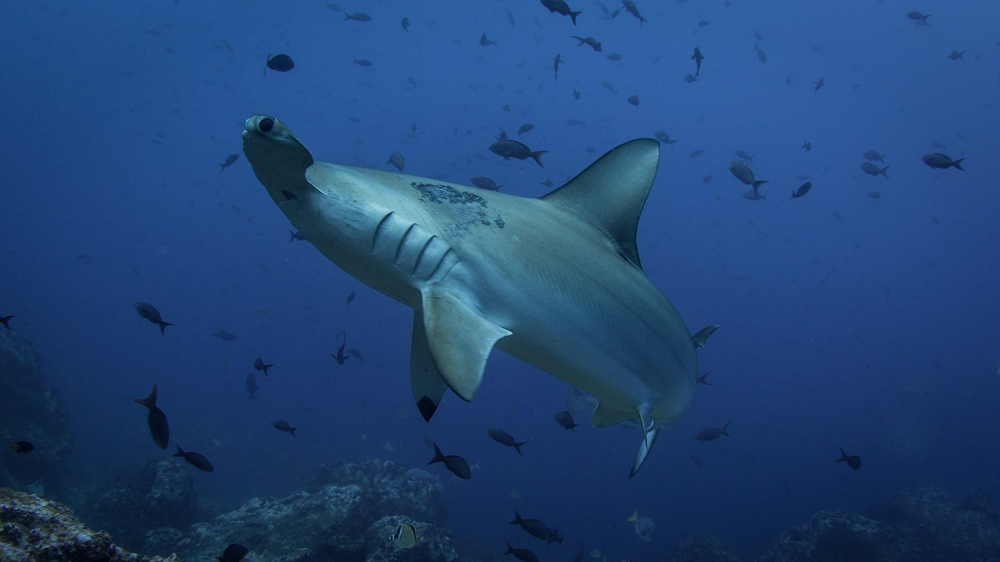
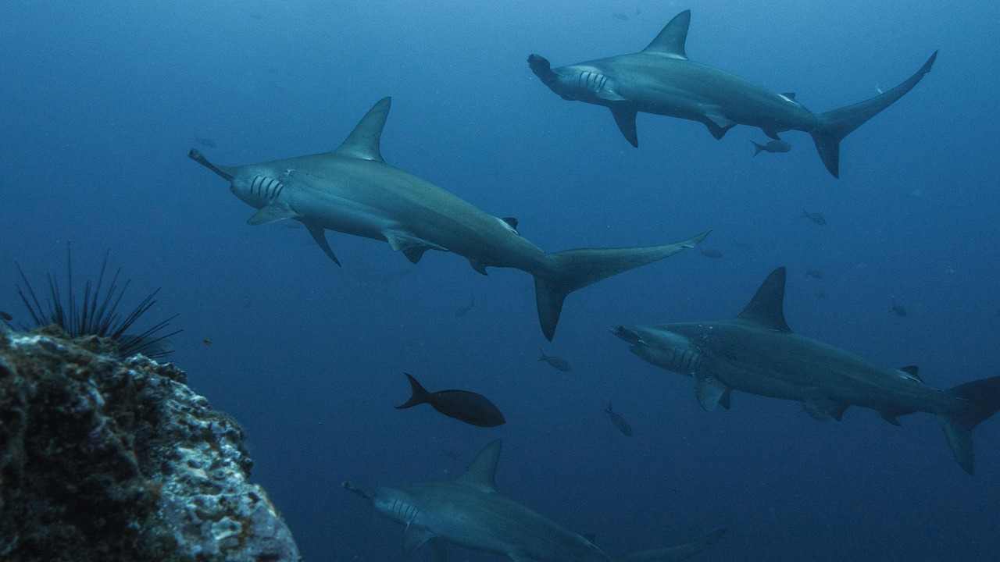

The hammerhead sharks are a group of sharks that form the family Sphyrnidae, named for the unusual and distinctive form of their heads, which are flattened and laterally extended into a cephalofoil (a T-shape or "hammer"). The shark's eyes are placed one on each end of this T-shaped structure, with their small mouths directly centered and underneath.

Hammerhead shark species vary in length and weight. The largest species, the Great Hammerhead, has an average length of 4.0 m and weight of 230 kg. They are usually light gray and have a greenish tint. Their bellies are white, which allows them to blend into the background when viewed from below and sneak up to their prey.
Hammerhead sharks eat a large range of prey such as:
Humans are the main threat to hammerhead sharks. Although they are not usually the primary target, hammerhead sharks are caught in fisheries all over the world. Tropical fisheries are the most common place for hammerheads to be caught because of their preference to reside in warm waters. The total number of hammerheads caught in fisheries is recorded in the Food and Agriculture Organization of the United Nations Global Capture Production dataset. The number steadily increased from 75 metric tons in 1990, to 6,313 metric tons by 2010.

In March 2013, three endangered, commercially valuable sharks, the hammerheads, the oceanic whitetip, and porbeagle, were added to Appendix II of CITES, bringing shark fishing and commerce of these species under licensing and regulation
Copyright 2025 - WEB 100 - 001 - Daniel Mould - 0886132@myscc.ca